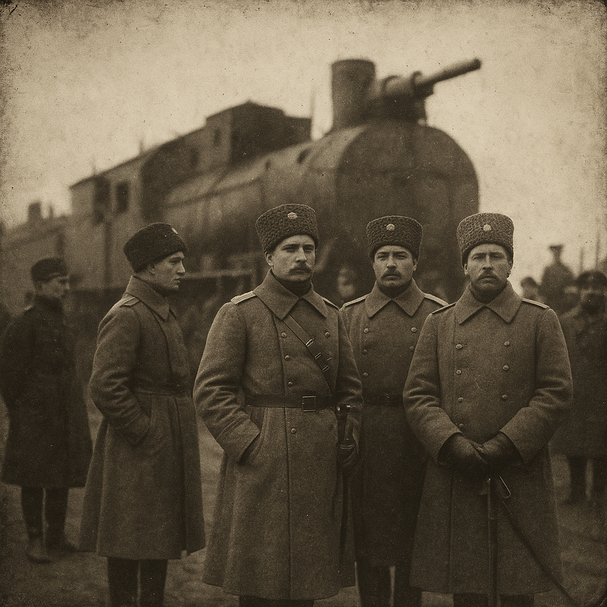

История прихода
Как всё начиналось. Кратко о главном.
Икона Знамения
Главная святыня храма — история и чудеса.

Богослужения
Как устроено расписание, ответы на вопросы.

Приходская жизнь
О нашей общине, жизни вне богослужений.